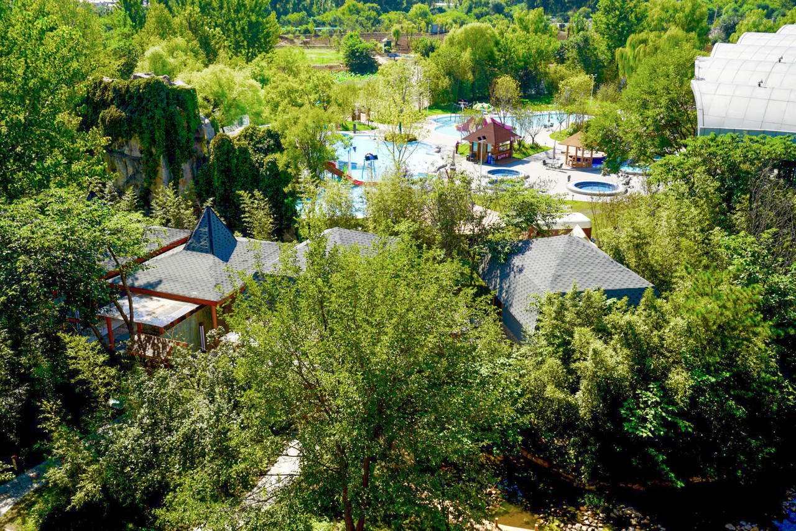

YUANWANG · HOT SPRING DESIGN & ENGINEERING
The architecture of water.
Integrated hot spring resort planning, water engineering, geothermal energy and immersive spa experiences — from early concept to commissioning and long-term operation.
Planning & designWater engineeringProduct integration
YUANWANG / 01
Explore Yuanwang

2002Water treatment for hot springs since
100+Completed or ongoing projects
50+Designers & engineers
2009Largest shareholder of Stavsjö, Sweden
YUANWANG / 02
Selected work
YUANWANG / 03
One team, from concept to commissioning
Design, engineering and product supply under one contract — so the water works the way the drawings promised.
- 01Planning & designMasterplans, hot spring zones, spa interiors and landscape.Engineering & design ↗
- 02Water & MEP engineeringWater treatment, circulation, heating and controls sized to your source water.Technology ↗
- 03Geothermal energyCascade use, reinjection, corrosion and scale control for geothermal water.Geothermal systems ↗
- 04Products from our factorySTAVSJÖ stainless steel pools, spas, saunas and water shows, made to order.STAVSJÖ products ↗
- 05Commissioning & after-salesInstallation support, operator training, spare parts and remote service.After-sales ↗
YUANWANG / 04
From Beijing, for projects worldwide
We design and supply from China and support overseas clients remotely and on site, in English and Chinese.
International delivery- ChinaHead office & factory · Beijing
- SwedenStavsjö hot spring hotel · since 2009
- CanadaProject delivered
- USAProject in progress
- New ZealandProject in progress
Let’s shape your next water experience.
Start a conversation ↗